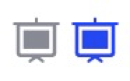
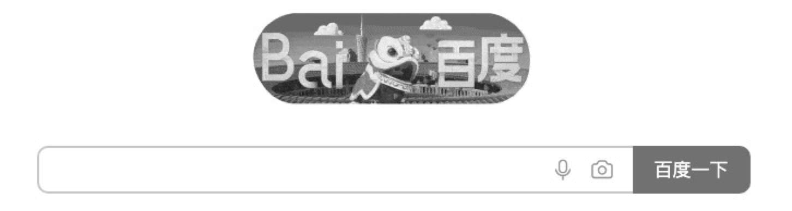
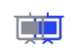
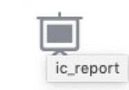
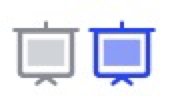

前言
事情是这样滴，设计师给出一个图标在蓝湖上，我首选是下载为png格式的图片。前前后后也改了三版。

第一版 png格式的icon
为什么使用png
- 图片不会被打包进
bundle.js中，不会增加包的体积 - 图片可以被
缓存起来，仅第一次请求时需要下载，后续直接读取缓存副本显示，而且图标图片大小不会很大
高亮时怎么变色
都知道图片不是元素，不能通过color或者background-color来修改颜色，那么高亮时怎么换色呢？
filter drop-shadow
filter是将模糊或者颜色的图形效果应用在元素上的CSS属性。
- 一些特殊日子，或者清明节时，某些官网和账号的头像会变灰色，就是CSS一个属性搞定的。
1
2
3html{
filter: grayscale(1);
}

- 模糊(马赛克)，比如打开详情页时，突然发现你的session失效了，产品经理只想在当前页让用户输入账号，又不想让用户看到里面的信息
1
2
3html{
filter: blur(10px);
}
更多属性请查看filter属性
- 我用到的是
drop-shadow阴影效果。直接看代码1
2
3html{
filter: drop-shadow(18px 0px #2142FA);
}

是根据原有图形，创建一个阴影，向左偏移18px, 向下偏移0px，阴影颜色是#2142FA，还省略一个模糊设置，默认是0px所以没写。
再把原有图形隐藏掉，阴影移动到原来图形的位置即可。
1 | html{ |
第二版 png失真处理
png图片看着会有一点模糊，所以改用svg格式。
从蓝湖上下载的文件格式，换成svg。引入react-svg-inline库，配置好svg即可。
小细节
测试发现鼠标悬浮时，出现了tips

我确信我没有添加title属性，难道是react-svg-inline引入了? 排查一下也没有啊啊。
原来是SVG里带的，第四行。我这边就删除了三四五这3行
1 |
|
渲染SVG图标
引入react-svg-inline，用span标签包裹起来，方便设置svg里的颜色
1 | import SVGInline from "react-svg-inline"; |
1 | const Svg = styled.span` |
更换成SVG完成
这就完成了从png到svg的调整。
- 蓝湖里下载的svg图片
- svg文件中去除
title等多余标签 - 引入
react-svg-inline，设置填充色
图标美化
设计师又出了一版图标，原来标图同时只有一个色号，现在出现了两种色号

下载svg格式后，同样删除多余的title属性时，发现多了一个标签rect画矩形。
1 |
|
这样好办啊，填充颜色时，给rect单独设置颜色即可
渲染SVG图标
1 | import SVGInline from "react-svg-inline"; |
1 | const Svg = styled.span` |
事情并不简单
事情并不简单，单纯的设置rect的颜色，耦合性太高。例子中的图标比较简单，设计师后几个图标就比较乱。
所以这边也手动维护乱一下svg文件，给标签添加类，通过类名设置填充色。
1 |
|
1 | const Svg = styled.span` |
总结
png会失真，如果让设计师提供像素更高的图标，png看上去不会失真，但是第三版的图标看，还是需要换成svg格式的- 通过维护
svg文件的类名，填充不同的颜色，虽然能达到，但维护成本大，更换图标还需要再维护 - 更换
svg后bundle.js增加了8KB(Gzipped size)